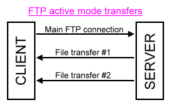
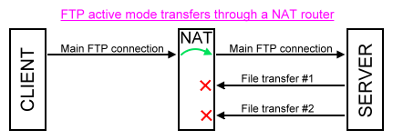
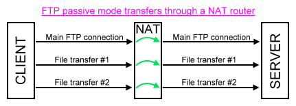
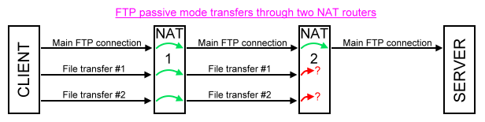

|
|
|
|
How to FTP through a NAT router/firewall |
|
|
|
|
Network Address Translating (NAT) routers/firewalls present challenges for users of FTP.
As described in the FTP Protocol Overview, FTP uses multiple TCP/IP connections; one for
sending the commands on, the rest for transferring data. The following diagram illustrates a
typical session:

The three arrows indicate separate TCP/IP connections, with the commands being sent on the
main FTP connection.
Problems can arise when a NAT router is introduced:

Since the main connection is outgoing the NAT firewall allows this connection to be made, but
when the server tries to connect back to the client it is blocked by the firewall.
The technique called "passive mode" or PASV was introduced to reduce this problem. In this
scheme connections are always made from the client to the server and not vice-versa.

This is why passive mode is generally preferable when NAT firewalls are involved.
To use passive mode, the setConnectMode()
method should be used, supplying the PASV type as shown.
ftp.getAdvancedFTPSettings().setConnectMode(FTPConnectMode.PASV);
In fact, in plain FTP active mode often works due to some magic in many NAT routers - they
actually parse the FTP commands being sent and know what to do with the data transfer
connections.
Dealing with dual NATs
Unfortunately, some FTP sessions involve two NATs:

Usually, the main connection succeeds because the standard FTP port (21) is routed through
to the correct FTP server, but then the file transfers failed because the ports that they use are
not set up to forward to the server.
In this scenario, the server may be set up to only use particular ports for data transfers. The
server-side NAT may then be configured to forward these ports to the server.